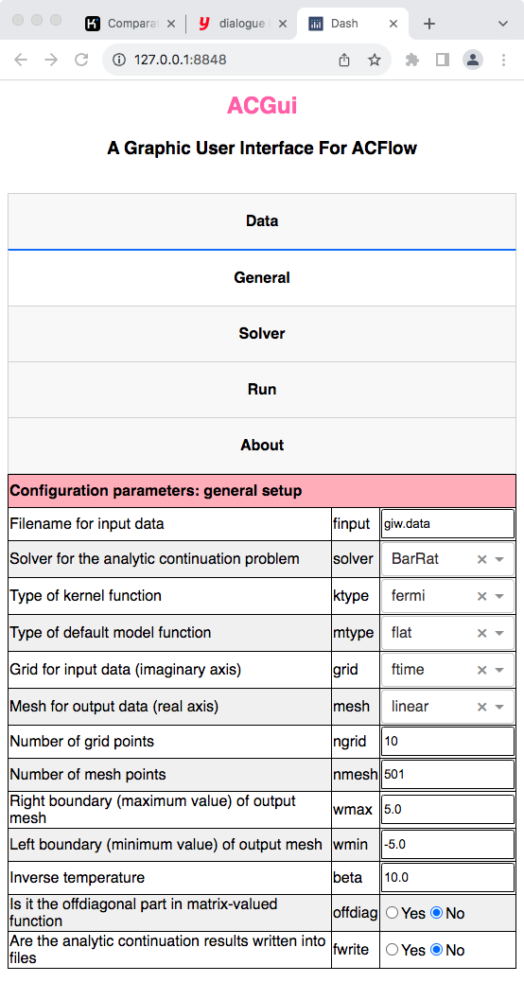

It is quite easy to use ACGui.
Boost Server Side
Suppose that the ACGui toolkit is placed in the folder /home/your_home/acgui, then we should execute the following command in the terminal to launch the server side of ACGui:
$ pwd
/home/your_home/acgui
$ ./util/acg.jl
[ Info: Listening on: 127.0.0.1:8848, thread id: 1Launch Client Side
Next, we can use any favourite web browsers (such as Chrome, Edge, or Firefox) to open the following URL:
http://127.0.0.1:8848This is the client side of ACGui.
Prepare Input Data
- Select the
Datatab. - Click
Drag and Drop or Select Files. - Choose a appropriate file that contains the necessary data.
- Click
Openin the pop-up dialogue box.
After a few seconds, the data will be uploaded to the server side. Note that the data file will be stored in the working directory in the server side.

Figure 1 | The Data tab in ACGui.
General Setup
- Select the
Generaltab. - Fix filename for input data by
finput. - Choose suitable analytic continuation solver by
solver. - Fix other parameters if necessary.

Figure 2 | The General tab in ACGui.
Configure Analytic Continuation Solver
- Select the
Solvertab. - Customize the parameters for the chosen solver.

Figure 3 | The Solver tab in ACGui.
Run Analytic Continuation Solver
- Select the
Runtab. - Click
Start Analytic Continuationto start calculation. After a few seconds or minites or hours (it depends on the solver you used), the spectrum will be shown in the bottom of this tab. - Click
Get ac.toml onlyto download the generatedac.tomlfile. Later you can modify it and start analytic continuation calculation manually. - Click
Check err.outto check theerr.outfile if available. IfACFlowencounters something wrong, it will write the error message intoerr.out.

Figure 4 | The Run tab in ACGui.
To make ACGui works correctly, you have to make sure ACFlow and ACGui are installed correctly, or the relevant environment variables (I mean ACFLOW_HOME and ACGUI_HOME) are set correctly.
The MaxEnt and BarRat solvers are highly efficient. So we can see the analytic continuation results very soon. However, the other stochastic solvers are quite slow. It is not a good idea to launch them directly through ACGui. We usually use ACGui to generate a valid ac.toml. Then we can submit the computational job manually.
Now ACGui does not support parallel calculation. In other words, you can not execute the StochAC, StochSK, StochOM, and StochPX solvers with multiple processors at the same time.
Stop Server Side
- Press
CTRL+Cin the terminal, then the client side will stop to respond.
Change Internet Port
The default HTTP port is 8848, but you can modify it by the following steps:
- Open
acgui/src/base.jlwith any favorite editor. - Go to line 34, and change 8848 to any positive number between 1 and 65535 you wish.
- Please stop and restart the server side to make it work.
# Start the server
run_server(
app,
Dash.HTTP.Sockets.localhost,
8848, # Change it
debug = false
)